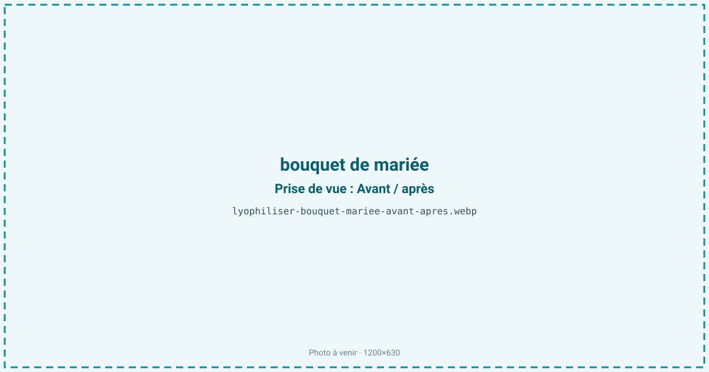
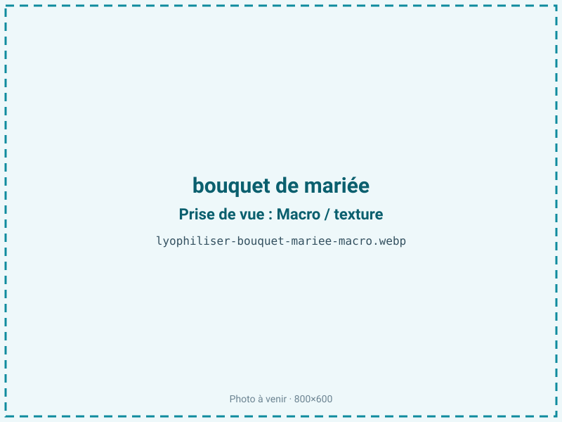
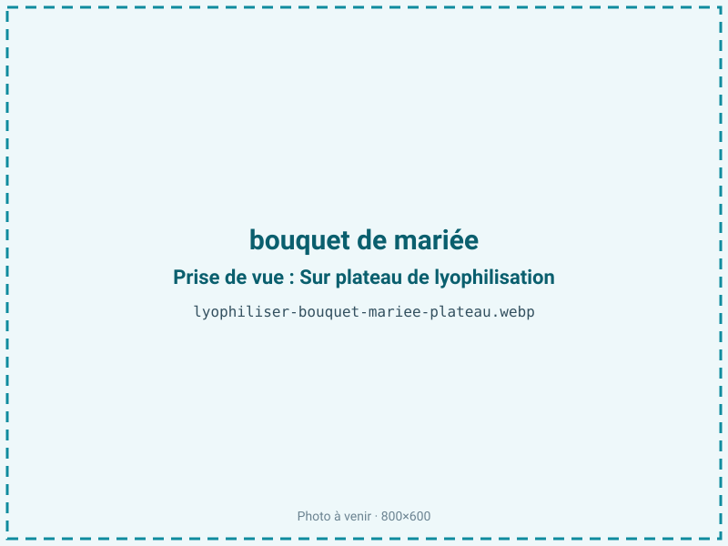
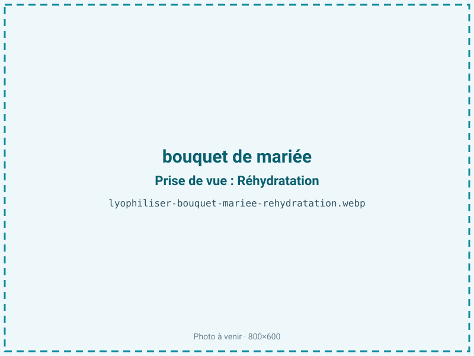

Lyophiliser un bouquet de mariée
Un bouquet de mariée fane en quelques jours ; pressé, il s'aplatit, séché à l'air, il se racornit. La lyophilisation retire l'eau des pétales sous vide sans les écraser, conservant volume, forme et couleurs pendant des années. Le bouquet garde l'allure exacte du jour J.

En bref
Comment bouquet de mariée se comporte à la lyophilisation
Les pétales renferment 80 à 95 % d'eau et tiennent leur galbe par la pression de turgescence : l'eau gonfle des cellules à parois fines de parenchyme. Un bouquet est hétérogène — pétales minces, réceptacle et tiges épais, boutons denses — et chaque tissu sèche à une vitesse différente, ce qui explique la longueur du cycle.
À la congélation, l'eau des cellules est figée ; il est capital que la fleur reste gelée en continu, car un simple dégel fait chuter la turgescence et le pétale se flétrit avant même de sublimer. À la sublimation, l'eau quitte les cellules tandis que les parois de cellulose maintiennent la forme : pas de retrait ni de collapse si l'on procède lentement. Les couleurs, portées par les anthocyanes (rouges, violets) et les caroténoïdes, sont préservées faute de chaleur. Une rose, avec son cœur dense, met bien plus longtemps qu'un pétale isolé ; le cœur mal séché est le principal défaut d'un bouquet lyophilisé.
Paramètres de cycle
Traiter le bouquet très frais, dans les 48 h, en le réhydratant et en le mettant en forme avant congélation. Congeler à −20 voire −30 °C, assez pour figer sans faire éclater les tissus délicats. La sublimation se conduit à clayette basse et sur une durée longue — 5 à 15 jours — dictée par les têtes les plus denses, comme le cœur des roses ou des pivoines.
Il n'y a pas de cible d'aw ici : le critère d'arrêt est une siccité homogène, où pétales et cœur sont secs sans être cassants à l'excès. Sur-sécher rendrait les pétales friables et pulvérulents au toucher. Chaque espèce ayant son propre rythme, un bouquet mêlant plusieurs fleurs impose de caler le cycle sur la plus lente. Un traitement de surface (fixateur, laque) après séchage renforce la tenue avant mise sous cloche.
Pièges connus
- Traiter très frais, dans les 48 h.
- Cycle long et délicat, fleur par fleur.



Variantes & provenance
L'espèce commande tout : les roses et pivoines, à têtes denses, exigent les cycles les plus longs, quand un gerbera ou une marguerite, plats, sèchent vite. Les couleurs évoluent légèrement — un rouge profond fonce, un blanc peut virer crème, certains bleus se décalent. La fraîcheur à l'entrée est décisive : une fleur déjà fatiguée ne retrouvera pas son galbe. La saison et la variété (rose de jardin plus fragile qu'une rose de fleuriste) modulent la teneur en eau. Plus les têtes sont grosses et charnues, plus le cycle s'allonge et plus le risque de cœur humide augmente.
Conservation & DLUO
Comme il s'agit d'un tissu végétal maigre, le facteur limitant n'est pas l'oxydation mais la reprise d'humidité : un pétale qui réabsorbe l'eau ramollit, perd sa forme et peut moisir. La conservation se joue donc sur l'étanchéité de la présentation — cloche de verre, cadre scellé, éventuellement inclusion en résine — à l'abri de l'humidité. Il ne s'agit pas d'une DLUO alimentaire : bien protégé, un bouquet tient plusieurs années. La lumière directe fait toutefois pâlir les anthocyanes au fil des ans, il faut donc éviter le plein soleil. Un sachet de gel de silice dans la cloche stabilise l'atmosphère. Le produit reste fragile et se manipule avec précaution.
Plusieurs années sous cloche ou cadre à l'abri de l'humidité.
Estimez selon votre emballage :
Face aux autres procédés de séchage
Le pressage aplatit la fleur et lui ôte tout relief ; le séchage à l'air la ratatine et la brunit ; le séchage au gel de silice, plus rapide et économique, écrase les pétales délicats des grosses fleurs et tient moins bien la couleur. La lyophilisation est la seule à préserver à la fois le volume tridimensionnel et la teinte d'un bouquet entier et intact, ce qui en fait le procédé de référence pour un souvenir de mariage où l'on veut retrouver la fleur telle qu'elle était.
Marchés & applications
Souvenirs de mariage encadrés, mis sous cloche de verre ou coulés en résine, services après-mariage proposés par les fleuristes et les wedding planners, cadeaux commémoratifs. Les clients types sont les particuliers attachés à leur bouquet, les fleuristes qui étoffent leur offre et les organisateurs d'événements, pour qui la conservation prolonge la valeur émotionnelle d'un objet unique.
- Souvenir de mariage
- Encadrement, cloche, résine
Questions fréquentes — bouquet de mariée
Dans quel délai apporter le bouquet ?
Idéalement dans les 48 h après le mariage, tant qu'il est frais. Au-delà, mieux vaut le congeler en attendant le traitement.
Les couleurs changent-elles ?
Légèrement : les rouges foncent parfois, les blancs peuvent virer crème. L'essentiel de la teinte est conservé, mais le résultat n'est jamais strictement identique.
Combien de temps le bouquet se conserve-t-il ?
Plusieurs années s'il est gardé au sec sous cloche ou en cadre, à l'abri du soleil qui ferait pâlir les couleurs.
Peut-on le couler dans de la résine ?
Oui, après lyophilisation : la fleur sèche et rigide se prête à l'inclusion, contrairement à une fleur fraîche.
Pourquoi le cycle dure-t-il plusieurs jours ?
Parce qu'un bouquet est hétérogène : les têtes denses, comme le cœur des roses, sèchent bien plus lentement que les pétales fins.
Le bouquet est-il fragile ensuite ?
Oui : les pétales déshydratés sont cassants et se manipulent avec soin, d'où l'intérêt d'une mise sous cloche ou sous cadre.
Toutes les fleurs se lyophilisent-elles ?
La plupart, mais les roses et pivoines, très charnues, sont les plus délicates et exigent les cycles les plus longs.
Prochaine étape : envoyez-nous 200 g
Vous avez les repères du bouquet de mariée. La suite logique : nous envoyer un échantillon et repartir avec une fiche technique sur votre produit — rendement, aw finale, coût au kilo.
Tester du bouquet de mariée — 250 à 500 €Déductible de votre premier lot.